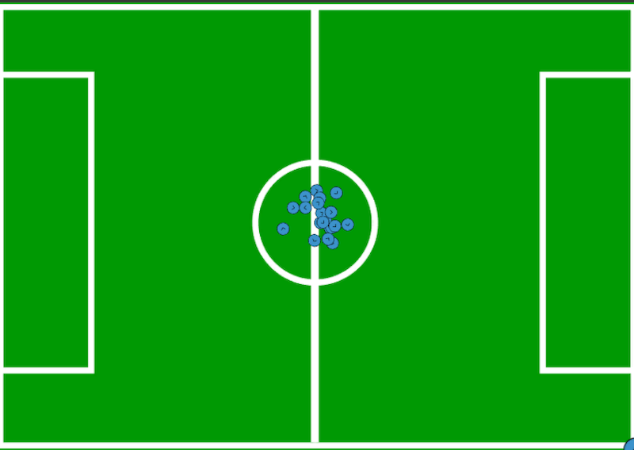
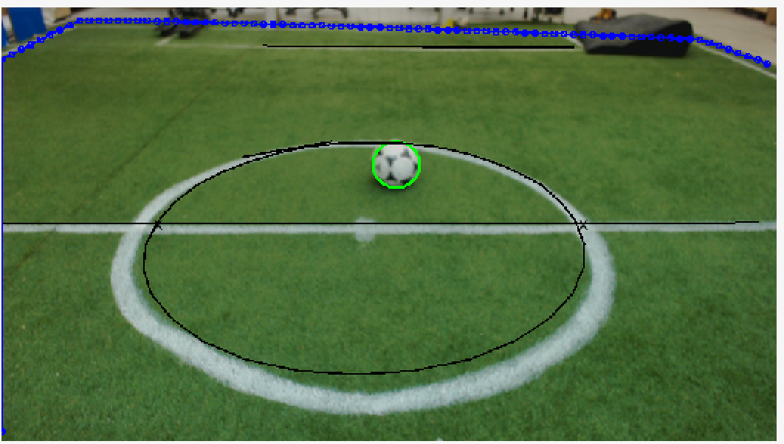

| Name | Mohammad Javadi |
| Date of birth | July 20, 1994 |
| Originally from | Tehra, Iran |
| Languages | Persian, English, Turkish |
| mohammadjv94@gmail.com |
Topics of Interest
- Computer Vision
- Digital Image Processing
- Deep Learning
- Computer Vision Neuro Science
- Intelligent Robotics

B.Sc student in Computer Engineering and Information Technology at Amirkabir University of Technology (Tehran Polytechnic). Diploma in Mathematics and Physics, Allame Helli(2) High School, Tehran, Iran, 2013.
|
Bio-Inspired System Design Laboratory - Spring 2017
|
Humanoid Robot Detection Using Deep Learning: A Speed-Accuracy Trade-off Amirkabir University of Technology, Tehran, Iran We compare several two-stage detection systems based on various CNN's and highlight their speed-accuracy trade off. The approach performs edge based image segmentation in order to reduce the search space and then a CNN validates the detection in the second stage. Paper were published in RoboCup Symposium 2017. (paper Link) Codes are available on Github.  |
|
Bio-Inspired System Design Laboratory - Started February 2016, Ended May 2017
|
Humanoid Robot Localization using Particle Filter Amirkabir University of Technology, Tehran, Iran As humans model their environment, Humanoids also must do it to be aware of world model and make appropriate decisions in a timely manner. For this purpose, based on statistical analysis(Particle Filter and Monte Carlo methods) and using perception data(goals, lines, landmarks and center circle in soccer field) provided by Humanoid cognition module, we can use relative distances to our self in order to find our location in soccer field. The source code is not released because of the teams rule, but a detailed technical report of our implementation is available here. 
|
|
Hirad Design and Construction Co - started February 2016 , ended February 2017
|
Mobile Application Development for Home Automation Advanced Technology Centre of Amirkabir University of Technology, Tehran, Iran
A smart home, involves the control and automation of lighting, heating, ventilation, air conditioning, security and etc.
In this project, I implemented a cross-platform application(can be use in Android, iOS, BlackBerry and Desktop platform)
using Qt library which enables a user to control their smart house through wifi. |
|
Mobin Intelligent System - started October 2015 , ended February 2016
|
Implementation of a Base Code for Vehicle Registration Plate Detection Mobin Intelligent System , Tehran, Iran
Detection and recognition of vehicle registration plate in urban traffic camera's was our system's goal.
The constraint of this project was the system processor which was a DSP board and it's not possible
to use high level c++ libraries(like OpenCV, Qt and etc) in this board. |
|
Amirkabir Robotic Center - started September 2014 , ended July 2015
|
A High Speed Vision System for Humanoid Soccer Player Robots Amirkabir University of Technology, Tehran, Iran
In this research, we implemented a high-speed cognition module for AUTMan Humanoid Robotic Team.
The output(ball, Goal posts, Lines, Center Circle and Obstacles) of this system is an input to localization and behavior modules.
The challenges of this project are: 
|
|
Publications |
Mohammad Javadi
Tehran, Iran
E-mail:
mohammadjv94@gmail.com
mohammad.javadi@aut.ac.ir
Mobile: +98 936 481 9275